Debug
集成了openocd调试。可以断点调试 查看线程、变量，集成gdb控制台，内存视图，和外设寄存器查看。
默认的openocd未设置参数，如esp32c3/esp32s3/esp32c6/esp32c5/esp32h2/esp32p4 等含 内置jtag对于这些 idf.py openocd会自动选择内置jtag进行调试， 而如esp32 和esp32s2等 官方idf文档里面也是使用了核心板上外置的jtag进行调试，如果采用外置jtag调试器连接方式，需要openocd 参数项。
详情见配置其他jtag
默认的运行配置
使用当前插件新建项目时，会基于选择的target创建一份运行配置。如果使用esp32c3/esp32s3/esp32c6/esp32c5/esp32h2/esp32p4等无需其他配置， 连接esp32的jtag到pc即可一键debug。
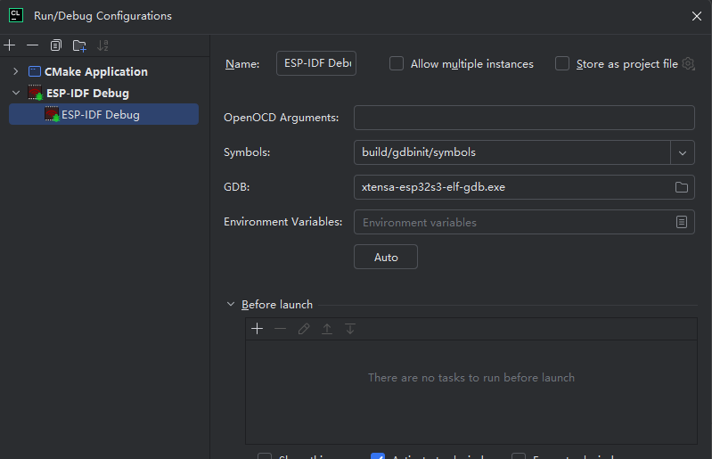
手动新建配置
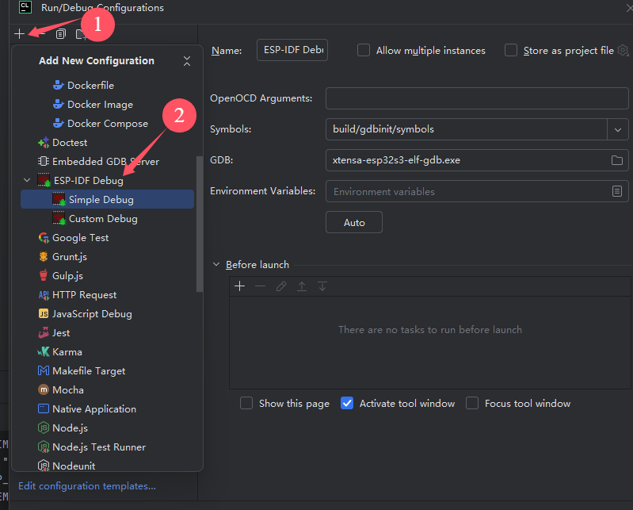
Simple Debug 会默认使用idf生成的gdbinit下的符号加载脚本，多个Profile情况下，切换具体build目录的符号加载脚本，会自动重新设置gdb。 openocd会根据选择的符号脚本目录，切换build目录，可以在不要切换profile情况下调试。更方便于多个Profile情况下配置。
Custom Debug 会默认基于build目录下的
project_description.json填充一些默认参数。 需要设置各个elf文件，芯片rom的elf版本可能存在多个，自动选中的可能不符合当前调试的芯片版本。 openocd会指定当前选中的profile。 App的elf文件必选。
运行项前方带Profile选择功能，仅供切换clion代码编辑器在不同Profile下的代码解析/索引。如果需要分别对多个Profile调试可以建立多个调试配置。
Auto功能
Auto按钮可以自动填充调试配置项，0.7之前只对第一个CMake Profile生成。而0.7版本开始按选中的Profile生成。
调试方法
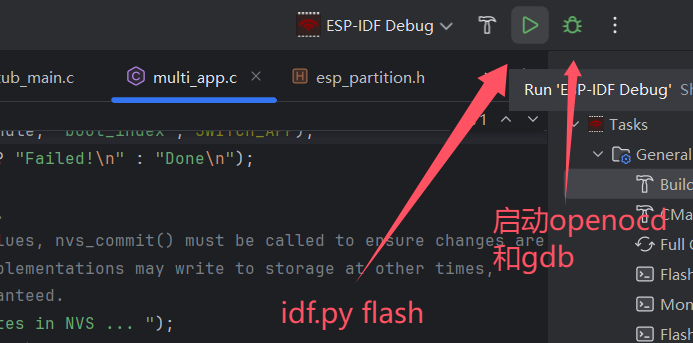
在调试之前需要将程序编译完成并写入esp32的flash，可以使用任务树上的flash按钮或者点击 debug配置的运行图标。
点击debug图标开始调试,会启动openocd和gdb
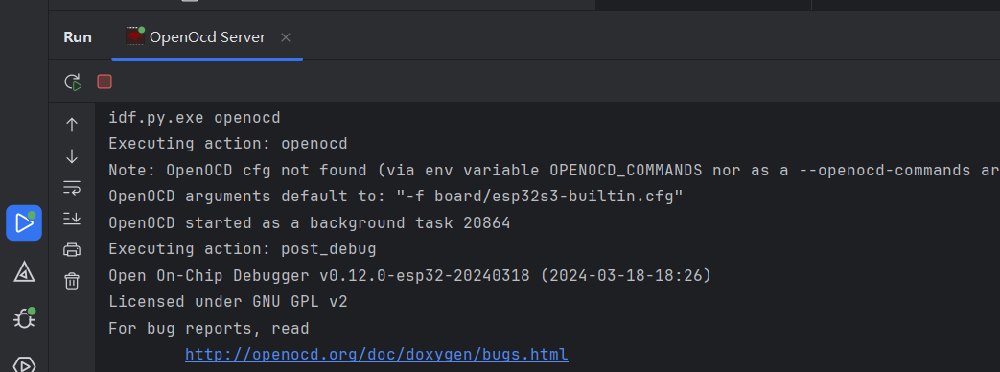
会有一个默认断点，并非当前插件设置，建议在app_main手动打断点.然后跳过去。
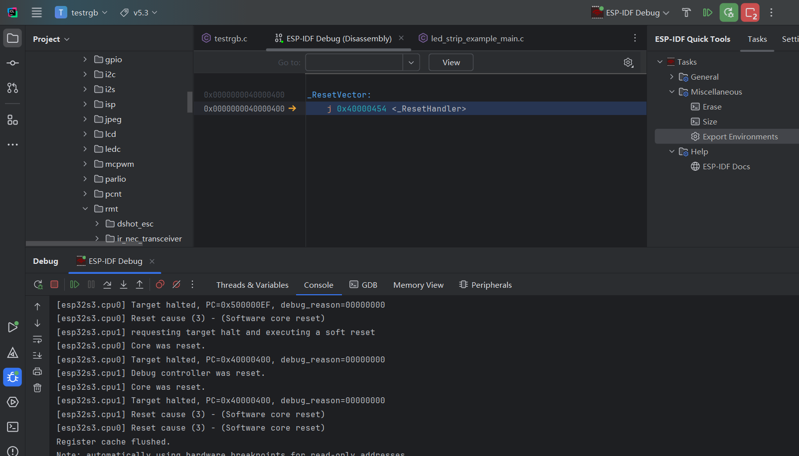
查看线程
可以下拉线程框切换线程，每个线程栈帧可以点击跳转对应文件行。
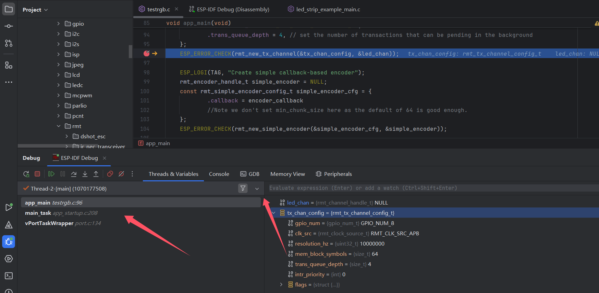
变量
可以查看变量，进行一些表达式计算，设置变量值，复制地址到内存视图查看，等操作。
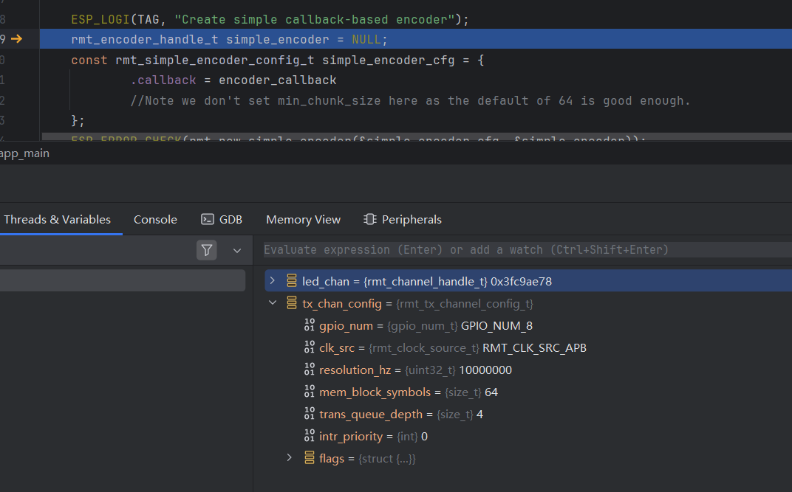
gdb控制台
可执行gdb命令，比如在这里写入寄存器。
比如输入以下命令,将io2设置为输出模式并写入高低，用来控制led灯。超过32的寄存器需要另外一组，具体可以查看技术参考手册。
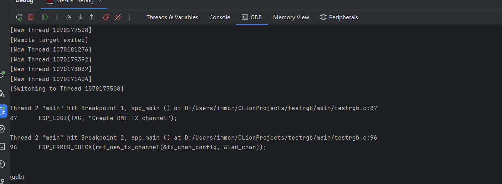
内存视图
需要复制一个地址查看内存数据分布
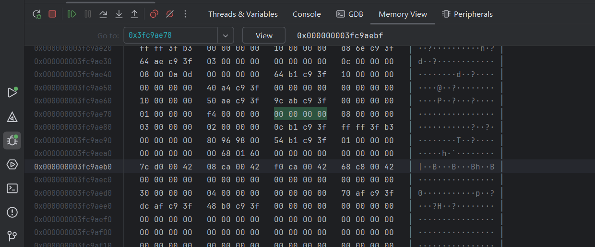
外设
可以查看芯片外设的寄存器地址和值
加载对应芯片的svd文件
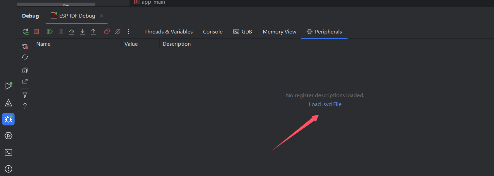
点此跳转乐鑫svd项目进行下载。
加载之后如图，如果选错，需要根节点 hide,然后重选。该文件地址本身会被记忆，如果切换芯片，需要手动重选。
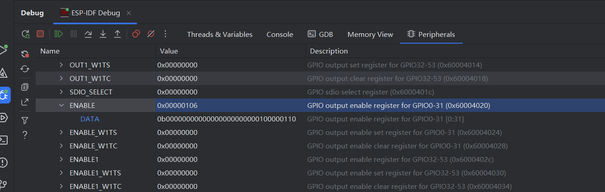
需要搜索可以使用以csv编辑器打开的功能。也可编辑寄存器。
注意事项
linux可能启动openocd失败 会有如下报错
libusb_open() failed with LIBUSB_ERROR_ACCESS
对应设备无权限 ,在tools 目录找到openocd目录下的60-openocd.rules
一般在用户目录.espressif下
例如
将60-openocd.rules复制到/etc/udev/rules.d/并刷新规则
或者按openocd报错日志临时赋予权限，执行LIBUSB_DEBUG=1 idf.py openocd
找到报错的设备
使用chmod给 其他用户和用户组赋 读写权限 sudo chmod 766 /dev/bus/usb/具体数字/具体数字 。当然 777也是可以的。
gdb 停不掉问题
当gdb在执行命令时，使用clion自带销毁进程方式 可能无法关闭。
最常见于openocd 未成功连接设备退出后， gdb忙于连接openocd等待超时，由于设置了10秒超时时间， 这个中途clion尝试销毁进程可能不会正确得到响应，最后不再尝试。遇到openocd未能连接设备的情况，可略等待超时后停止调试。 或者手动kill gdb进程。